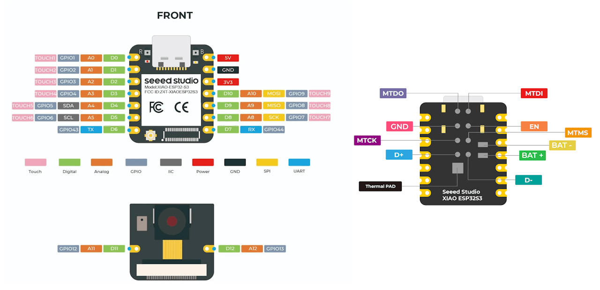
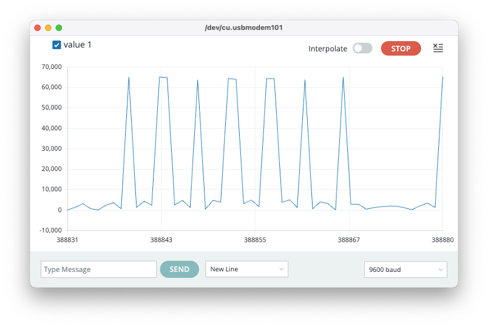
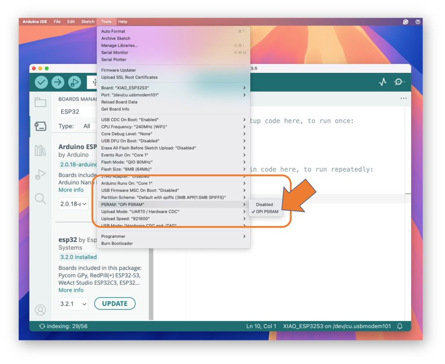
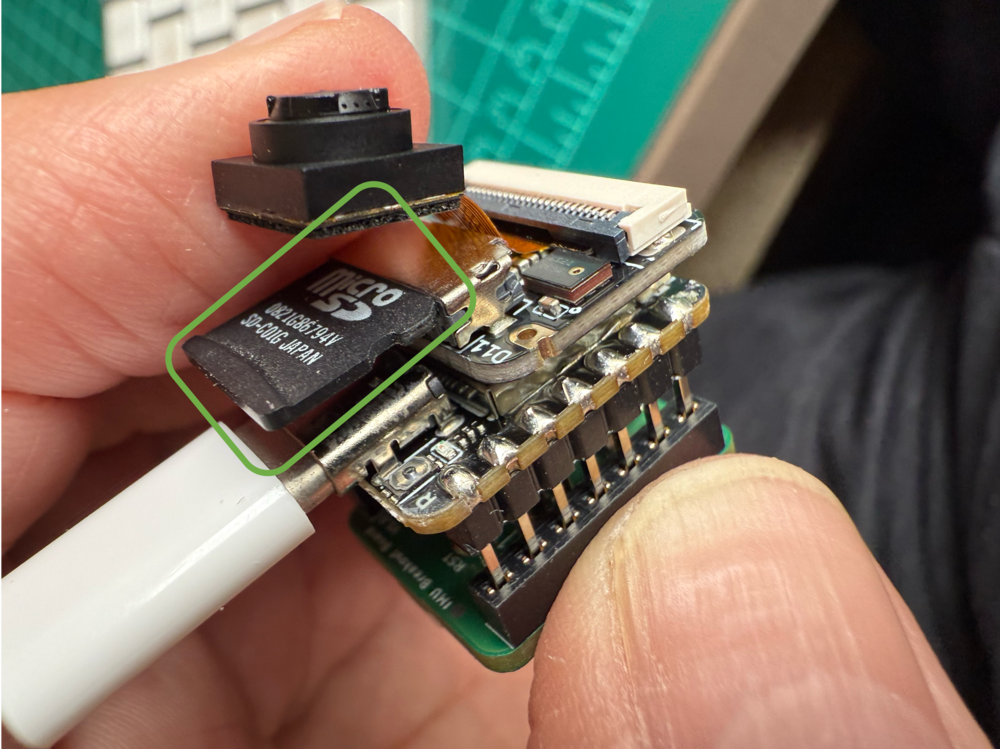
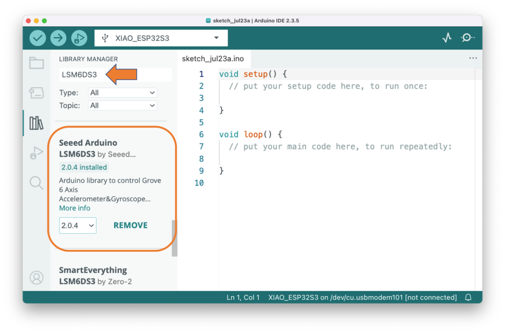
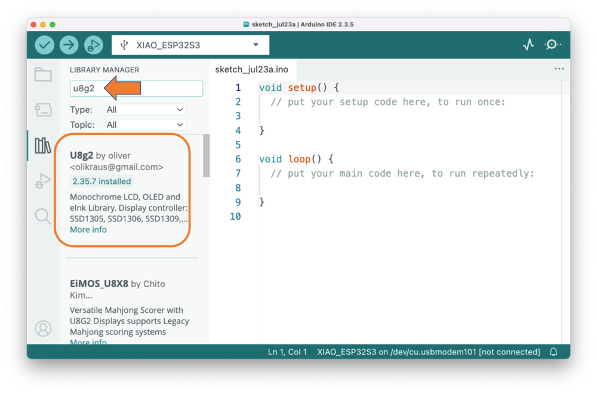

Setup
![DALL·E prompt - 1950s cartoon-style drawing of a XIAO ESP32S3 board with a distinctive camera module, as shown in the image provided. The board is placed on a classic lab table with various sensors, including a microphone. Behind the board, a vintage computer screen displays the Arduino IDE in muted colors, with code focusing on LED pin setups and machine learning inference for voice commands. The Serial Monitor on the IDE showcases outputs detecting voice commands like ‘yes’ and ‘no’. The scene merges the retro charm of mid-century labs with modern electronics.](./images/jpeg/xiao_setup.jpg)
Overview
The XIAOML Kit is designed to provides hands-on experience with TinyML applications. The kit includes the powerful XIAO ESP32S3 Sense development board and an expansion board that adds essential sensors for machine learning projects.
Complete XIAOML Kit Components:
- XIAO ESP32S3 Sense: Main development board with integrated camera sensor, digital microphone, and SD card support
- Expansion Board: Features a 6-axis IMU (LSM6DS3TR-C) and 0.42” OLED display for motion sensing and data visualization
- SD Card Toolkit: Includes SD card and USB adapter for data storage and model deployment
- USB-C Cable: For connecting the board to your computer
- Antenna and Heat Sinks
⚠️ Attention
Do not install the heat sinks (or carefully, remove them) on/from the XIAO ESP32S3 if you want to use the XIAO ML Kit Expansion Board. See Appendix for more information.
XIAO ESP32S3 Sense - Core Board Features
The XIAO ESP32S3 Sense serves as the heart of the XIAOML Kit, integrating embedded ML computing power with photography and audio capabilities, making it an ideal platform for TinyML applications in intelligent voice and vision AI.

Key Features
- Powerful MCU: ESP32S3 32-bit, dual-core, Xtensa processor operating up to 240 MHz, with Arduino / MicroPython support
- Advanced Functionality: Detachable OV2640 camera sensor for 1600 × 1200 resolution, compatible with OV5640 camera sensor, plus integrated digital microphone
- Elaborate Power Design: Lithium battery charge management with four power consumption models, deep sleep mode with power consumption as low as 14 μA
- Great Memory: 8 MB PSRAM and 8 MB FLASH, supporting SD card slot for external 32 GB FAT memory
- Outstanding RF Performance: 2.4 GHz Wi-Fi and BLE dual wireless communication, supports 100m+ remote communication with U.FL antenna
- Compact Design: 21 × 17.5 mm, adopting the classic XIAO form factor, suitable for space-limited projects

Below is the general board pinout:

For more details, please refer to the Seeed Studio Wiki page
Expansion Board Features
The expansion board extends the XIAOML Kit’s capabilities for motion-based machine learning applications:
Components:
6-axis IMU (LSM6DS3TR-C):
- 3-axis accelerometer and 3-axis gyroscope for motion detection and classification
- Accelerometer range: ±2/±4/±8/±16 g
- Gyroscope range: ±125/±250/±500/±1000/±2000 dps
- I2C interface (address: 0x6A)
- 3-axis accelerometer and 3-axis gyroscope for motion detection and classification
0.42” OLED Display
- Monochrome display (72×40 resolution) for real-time data visualization
- Controller: SSD1306
- I2C interface (address: 0x3C)
- Monochrome display (72×40 resolution) for real-time data visualization
Restart Button (EN)
Battery Connector (BAT+, BAT- )
Complete Kit Assembly
The expansion board connects seamlessly to the XIAO ESP32S3 Sense, creating a comprehensive platform for multimodal machine learning experiments covering vision, audio, and motion sensing.
Please pay attention to the mounting orientation of the module:
Note that
- The
ENconnection, shown at the bottom of the ESP32S3 Sense, is available on the expansion board via theRSTbutton. - The
BAT+andBAT-connections are also available through theBAT3.7Vwhite connector.
XIAOML Kit Applications:
- Vision: Image classification and object detection using the integrated camera
- Audio: Keyword spotting and voice recognition with the built-in microphone
- Motion: Activity recognition and anomaly detection using the IMU sensors
- Multi-modal: Combined sensor fusion for complex ML applications
Installing the XIAO ESP32S3 Sense on Arduino IDE
Connect the XIAOML Kit to your computer via the USB-C port.
Download and Install the stable version of Arduino IDE according to your operating system.
Open the Arduino IDE and select the Boards Manager (represented by the
UNO Icon).Enter “ESP32”, and select”esp32 by Espressif Systems.” You can
installorupdatethe board support packages.
Do not select “Arduino ESP32 Boards by Arduino”, which are the support package for the Arduino Nano ESP32 and not our board.
⚠️ Attention
Versions 3.x may experience issues when using the XIAO ESP32S3 Sense with Edge Impulse deploy codes. If this is the case, use the last 2.0.x stable version (for example, 2.0.17) instead.
- Click
Select Board, enter with xiao or esp32s3, and select theXIAO_ESP32S3in the boards manager and the corresponding PORT where the ESP32S3 is connected.
That is it! The device should be OK. Let’s do some tests.
Testing the board with BLINK
The XIAO ESP32S3 Sense features a built-in LED connected to GPIO21. So, you can run the blink sketch (which can be found under Files/Examples/Basics/Blink. The sketch uses the LED_BUILTIN Arduino constant, which internally corresponds to the LED connected to pin 21. Alternatively, you can change the Blink sketch accordingly.
#define LED_BUILT_IN 21 // This line is optional
void setup() {
pinMode(LED_BUILT_IN, OUTPUT); // Set the pin as output
}
// Remember that the pins work with inverted logic
// LOW to turn on and HIGH to turn off
void loop() {
digitalWrite(LED_BUILT_IN, LOW); //Turn on
delay (1000); //Wait 1 sec
digitalWrite(LED_BUILT_IN, HIGH); //Turn off
delay (1000); //Wait 1 sec
}Note that the pins operate with inverted logic: LOW turns on and HIGH turns off.

Microphone Test
Let’s start with sound detection. Enter with the code below or go to the GitHub project and download the sketch: XIAOML_Kit_Mic_Test and run it on the Arduino IDE:
/*
XIAO ESP32S3 Simple Mic Test
(for ESP32 Library version 3.0.x and later)
*/
#include <ESP_I2S.h>
I2SClass I2S;
void setup() {
Serial.begin(115200);
while (!Serial) {
}
// setup 42 PDM clock and 41 PDM data pins
I2S.setPinsPdmRx(42, 41);
// start I2S at 16 kHz with 16-bits per sample
if (!I2S.begin(I2S_MODE_PDM_RX,
16000,
I2S_DATA_BIT_WIDTH_16BIT,
I2S_SLOT_MODE_MONO)) {
Serial.println("Failed to initialize I2S!");
while (1); // do nothing
}
}
void loop() {
// read a sample
int sample = I2S.read();
if (sample && sample != -1 && sample != 1) {
Serial.println(sample);
}
}Open the Serial Plotter, and you will see the loudness change curve of the sound.

When producing sound, you can verify it on the Serial Plotter.
Save recorded sound (.wav audio files) to a microSD card.
Now, using the onboard SD Card reader, we can save .wav audio files. To do that, we need first to enable the XIAO PSRAM.
ESP32-S3 has only a few hundred kilobytes of internal RAM on the MCU chip. This can be insufficient for some purposes, so up to 16 MB of external PSRAM (pseudo-static RAM) can be connected with the SPI flash chip (The XIAO has 8 MB of PSRAM). The external memory is incorporated in the memory map and, with certain restrictions, is usable in the same way as internal data RAM.
- To turn it on, go to
Tools->PSRAM:"OPI PSRAM"->OPI PSRAM

XIAO ESP32S3 Sense supports microSD cards up to 32GB. If you are ready to purchase a microSD card for XIAO, please refer to the specifications below. Format the microSD card to FAT32 format before using it.
Now, insert the FAT32 formatted SD card into the XIAO as shown in the photo below

/*
* WAV Recorder for Seeed XIAO ESP32S3 Sense
* (for ESP32 Library version 3.0.x and later)
*/
#include "ESP_I2S.h"
#include "FS.h"
#include "SD.h"
void setup() {
// Create an instance of the I2SClass
I2SClass i2s;
// Create variables to store the audio data
uint8_t *wav_buffer;
size_t wav_size;
// Initialize the serial port
Serial.begin(115200);
while (!Serial) {
delay(10);
}
Serial.println("Initializing I2S bus...");
// Set up the pins used for audio input
i2s.setPinsPdmRx(42, 41);
// start I2S at 16 kHz with 16-bits per sample
if (!i2s.begin(I2S_MODE_PDM_RX,
16000,
I2S_DATA_BIT_WIDTH_16BIT,
I2S_SLOT_MODE_MONO)) {
Serial.println("Failed to initialize I2S!");
while (1); // do nothing
}
Serial.println("I2S bus initialized.");
Serial.println("Initializing SD card...");
// Set up the pins used for SD card access
if(!SD.begin(21)){
Serial.println("Failed to mount SD Card!");
while (1) ;
}
Serial.println("SD card initialized.");
Serial.println("Recording 20 seconds of audio data...");
// Record 20 seconds of audio data
wav_buffer = i2s.recordWAV(20, &wav_size);
// Create a file on the SD card
File file = SD.open("/arduinor_rec.wav", FILE_WRITE);
if (!file) {
Serial.println("Failed to open file for writing!");
return;
}
Serial.println("Writing audio data to file...");
// Write the audio data to the file
if (file.write(wav_buffer, wav_size) != wav_size) {
Serial.println("Failed to write audio data to file!");
return;
}
// Close the file
file.close();
Serial.println("Application complete.");
}
void loop() {
delay(1000);
Serial.printf(".");
}- Save the code, for example, as
Wav_Record.ino, and run it in the Arduino IDE. - This program is executed only once after the user turns on the serial monitor (or when the
RESETbutton is pressed). It records for 20 seconds and saves the recording file to a microSD card as “arduino_rec.wav.” - When the “.” is output every second in the serial monitor, the program execution is complete, and you can play the recorded sound file using a card reader.

The sound quality is excellent!
The explanation of how the code works is beyond the scope of this lab, but you can find an excellent description on the wiki page.
To know more about the File System on the XIAO ESP32S3 Sense, please refer to this link.
Testing the Camera
For testing (and using the camera, we can use several methods:
- The SenseCraft AI Studio
- The CameraWebServer app on Arduino IDE (See the next section)
- Capturing images and saving them on an SD card (similar to what we did with audio)
Testing the camera with the SenseCraft AI Studio
The easiest way to see the camera working is to use the SenseCraft AI Studio, a robust platform that offers a wide range of AI models compatible with various devices, including the XIAO ESP32S3 Sense and the Grove Vision AI V2.
We can also use the SenseCraft Web Toolkit, a simplified version of the SenseCraft AI Studio.
Let’s follow the steps below to start the SenseCraft AI:
- Open the SenseCraft AI Vision Workspace in a web browser, such as Chrome, and sign in (or create an account).
- Having the XIAOML Kit physically connected to the notebook, select it as below:
Note: The WebUSB tool may not function correctly in certain browsers, such as Safari. Use Chrome instead. Also, confirm that the Arduino IDE or any other serial device is not connected to the XIAO.
To see the camera working, we should upload a model. We can try several Computer Vision models previously uploaded by Seeed Studio. Use the button [Select Model] and choose among the available models.
Passing the cursor over the AI models, we can have some information about them, such as name, description, category or task (Image Classification, Object Detection, or Pose/Keypoint Detection), the algorithm (like YOLO V5 or V8, FOMO, MobileNet V2, etc.) and in some cases, metrics (Accuracy or mAP).
We can choose one of the ready-to-use AI models, such as “Person Classification”, by clicking on it and pressing the [Confirm] button, or upload our own model.
In the Preview Area, we can see the streaming generated by the camera.
We will return to the SenseCraft AI Studio in more detail during the Vision AI labs.
Testing WiFi
Installation of the antenna
The XIAOML Kit arrived fully assembled. First, remove the Sense Expansion Board (which contains the Camera, Mic, and SD Card Reader) from the XIAO.
On the bottom left of the front of XIAO ESP32S3, there is a separate “WiFi/BT Antenna Connector”. To improve your WiFi/Bluetooth signal, remove the antenna from the package and attach it to the connector.
There is a small trick to installing the antenna. If you press down hard on it directly, you will find it very difficult to press and your fingers will hurt! The correct way to install the antenna is to insert one side of the antenna connector into the connector block first, then gently press down on the other side to ensure the antenna is securely installed.
Removing the antenna is also the case. Do not use brute force to pull the antenna directly; instead, apply force to one side to lift, making the antenna easy to remove.
Reinstalling the expansion board is very simple; you just need to align the connector on the expansion board with the B2B connector on the XIAO ESP32S3, press it hard, and hear a “click.” The installation is complete.
One of the XIAO ESP32S3’s differentiators is its WiFi capability. So, let’s test its radio by scanning the Wi-Fi networks around it. You can do this by running one of the code examples on the board.
Open the Arduino IDE and select our board and port. Go to Examples and look for WiFI ==> WiFIScan under the “Examples for the XIAO ESP32S3”. Upload the sketch to the board.
You should see the Wi-Fi networks (SSIDs and RSSIs) within your device’s range on the serial monitor. Here is what I got in the lab:

Simple WiFi Server (Turning LED ON/OFF)
Let’s test the device’s capability to behave as a Wi-Fi server. We will host a simple page on the device that sends commands to turn the XIAO built-in LED ON and OFF.
Go to Examples and look for WiFI ==> SimpleWiFIServer under the “Examples for the XIAO ESP32S3”.
Before running the sketch, you should enter your network credentials:
const char* ssid = "Your credentials here";
const char* password = "Your credentials here";And modify pin 5 to pin 21, where the built-in LED is installed. Also, let’s modify the webpage (lines 85 and 86) to reflect the correct LED Pin and that it is active with LOW:
client.print("Click <a href=\"/H\">here</a> to turn the LED on pin 21 OFF.<br>");
client.print("Click <a href=\"/L\">here</a> to turn the LED on pin 21 ON.<br>");You can monitor your server’s performance using the Serial Monitor.

Take the IP address shown in the Serial Monitor and enter it in your browser. You will see a page with links that can turn the built-in LED of your XIAO ON and OFF.

Using the CameraWebServer
In the Arduino IDE, go to File > Examples > ESP32 > Camera, and select CameraWebServer
On the board_config.h tab, comment on all cameras’ models, except the XIAO model pins:
#define CAMERA_MODEL_XIAO_ESP32S3 // Has PSRAM
Do not forget to check the
Toolsto see if PSRAM is enabled.
As done before, in the CameraWebServer.ino tab, enter your wifi credentials and upload the code to the device.
If the code is executed correctly, you should see the address on the Serial Monitor:
WiFi connecting....
WiFi connected
Camera Ready! Use 'http://192.168.5.60' to connectCopy the address into your browser and wait for the page to load. Select the camera resolution (for example, QVGA) and select [START STREAM]. Wait for a few seconds, depending on your connection. Using the [Save] button, you can save an image to your computer’s download area.
That’s it! You can save the images directly on your computer for use on projects.
Testing the IMU Sensor (LSM6DS3TR-C)
An Inertial Measurement Unit (IMU) is a sensor that measures motion and orientation. The LSM6DS3TR-C on your XIAOML kit is a 6-axis IMU, meaning it combines:
- 3-axis Accelerometer: Measures linear acceleration (including gravity) along X, Y, and Z axes
- 3-axis Gyroscope: Measures angular velocity (rotation rate) around X, Y, and Z axes
Technical Specifications:
- Communication: I2C interface at address
0x6A - Accelerometer Range: ±2/±4/±8/±16 g (we use ±2g by default)
- Gyroscope Range: ±125/±250/±500/±1000/±2000 dps (we use ±250 dps by default)
- Resolution: 16-bit ADC
- Power Consumption: Ultra-low power design
Coordinate System:
The sensor follows a right-hand coordinate system. When looking at the IMU sensor with the point mark visible (Expansion Board bottom view):
- X-axis: Points to the right
- Y-axis: Points forward (away from you)
- Z-axis: Points upward (out of the board)
Required Libraries
Before uploading the code, install the required library:
Open the Arduino IDE and select Manage Libraries (represented by the
Books Icon).For the IMU library, enter “LSM6DS3”, and select”Seeed Arduino LSM6DS3 by Seeed”. You can
INSTALLorUPDATEthe board support packages.

⚠️ Important: Do NOT install “Arduino_LSM6DS3 by Arduino” - that’s for different boards!
Test Code
Enter with the code below at the Arduino IDE and uploaded it to Kit:
#include <LSM6DS3.h>
#include <Wire.h>
// Create IMU object using I2C interface
// LSM6DS3TR-C sensor is located at I2C address 0x6A
LSM6DS3 myIMU(I2C_MODE, 0x6A);
// Variables to store sensor readings
float accelX, accelY, accelZ; // Accelerometer values (g-force)
float gyroX, gyroY, gyroZ; // Gyroscope values (degrees per second)
void setup() {
// Initialize serial communication at 115200 baud rate
Serial.begin(115200);
// Wait for serial port to connect (useful for debugging)
while (!Serial) {
delay(10);
}
Serial.println("XIAOML Kit IMU Test");
Serial.println("LSM6DS3TR-C 6-Axis IMU Sensor");
Serial.println("=============================");
// Initialize the IMU sensor
if (myIMU.begin() != 0) {
Serial.println("ERROR: IMU initialization failed!");
Serial.println("Check connections and I2C address");
while(1) {
delay(1000); // Halt execution if IMU fails to initialize
}
} else {
Serial.println("✓ IMU initialized successfully");
Serial.println();
// Print sensor information
Serial.println("Sensor Information:");
Serial.println("- Accelerometer range: ±2g");
Serial.println("- Gyroscope range: ±250 dps");
Serial.println("- Communication: I2C at address 0x6A");
Serial.println();
// Print data format explanation
Serial.println("Data Format:");
Serial.println("AccelX,AccelY,AccelZ,GyroX,GyroY,GyroZ");
Serial.println("Units: g-force (m/s²), degrees/second");
Serial.println();
delay(2000); // Brief pause before starting measurements
}
}
void loop() {
// Read accelerometer data (in g-force units)
accelX = myIMU.readFloatAccelX();
accelY = myIMU.readFloatAccelY();
accelZ = myIMU.readFloatAccelZ();
// Read gyroscope data (in degrees per second)
gyroX = myIMU.readFloatGyroX();
gyroY = myIMU.readFloatGyroY();
gyroZ = myIMU.readFloatGyroZ();
// Print readable format to Serial Monitor
Serial.print("Accelerometer (g): ");
Serial.print("X="); Serial.print(accelX, 3);
Serial.print(" Y="); Serial.print(accelY, 3);
Serial.print(" Z="); Serial.print(accelZ, 3);
Serial.print(" | Gyroscope (°/s): ");
Serial.print("X="); Serial.print(gyroX, 2);
Serial.print(" Y="); Serial.print(gyroY, 2);
Serial.print(" Z="); Serial.print(gyroZ, 2);
Serial.println();
// Print CSV format for Serial Plotter
Serial.println(String(accelX) + "," + String(accelY) + "," +
String(accelZ) + "," + String(gyroX) + "," +
String(gyroY) + "," + String(gyroZ));
// Update rate: 10 Hz (100ms delay)
delay(100);
}The Serial monitor will show the values, and the plotter will show their variation over time. For example, by moving the Kit over the y-axis, we will see that value 2 (red line) changes accordingly. Note that z-axis is represented by value 3 (green line), which is near 1.0g. The blue line (value 1) is related to the x-axis.
You can select the values 4 to 6 to see the Gyroscope behavior.
Testing the OLED Display (SSD1306)
OLED (Organic Light-Emitting Diode) displays are self-illuminating screens where each pixel produces its own light. The XIAO ML kit features a compact 0.42-inch monochrome OLED display, ideal for displaying sensor data, status information, and simple graphics.
Technical Specifications:
- Size: 0.42 inches diagonal
- Resolution: 72 × 40 pixels
- Controller: SSD1306
- Interface: I2C at address
0x3C - Colors: Monochrome (black pixels on white background, or vice versa)
- Viewing: High contrast, visible in bright light
- Power: Low power consumption, no backlight needed
Display Characteristics:
- Pixel-perfect: Each of the 2,880 pixels (72×40) can be individually controlled
- Fast refresh: Suitable for animations and real-time data
- No ghosting: Instant pixel response
- Wide viewing angle: Clear from multiple viewing positions
Required Libraries
Before uploading the code, install the required library:
Open the Arduino IDE and select the “Manage Libraries” (represented by the
Books Icon).Enter u8g2 and select U8g2 by oliver. You can
installorupdatethe board support packages.ℹ️ Note: U8g2 is a powerful graphics library supporting many display types

The U8g2 library is a monochrome graphics library with these features:
- Support for many display controllers (including SSD1306)
- Text rendering with various fonts
- Drawing primitives (lines, rectangles, circles)
- Memory-efficient page-based rendering
- Hardware and software I2C support
Test Code
Enter with the code below at the Arduino IDE and uploaded it to Kit:
#include <U8g2lib.h>
#include <Wire.h>
// Initialize the OLED display
// SSD1306 controller, 72x40 resolution, I2C interface
U8G2_SSD1306_72X40_ER_1_HW_I2C u8g2(U8G2_R2, U8X8_PIN_NONE);
void setup() {
Serial.begin(115200);
Serial.println("XIAOML Kit - Hello World");
Serial.println("==========================");
// Initialize the display
u8g2.begin();
Serial.println("✓ Display initialized");
Serial.println("Showing Hello World message...");
// Clear the display
u8g2.clearDisplay();
}
void loop() {
// Start drawing sequence
u8g2.firstPage();
do {
// Set font
u8g2.setFont(u8g2_font_ncenB08_tr);
// Display "Hello World" centered
u8g2.setCursor(8, 15);
u8g2.print("Hello");
u8g2.setCursor(12, 30);
u8g2.print("World!");
// Add a simple decoration - draw a frame around the text
u8g2.drawFrame(2, 2, 68, 36);
} while (u8g2.nextPage());
// No delay needed - the display will show continuously
}If everything works fine, you should see at the display, “Hello World” inside a rectangle.
OLED - Text Sizes and Positioning
Note that the text is positioned with
setCursor(x, y), in this case centered:u8g2.setCursor(8, 15);The font used in the code was medium.
u8g2.setFont(u8g2_font_ncenB08_tr);But other font sizes are available:
u8g2_font_4x6_tr: Tiny font (4×6 pixels)u8g2_font_6x10_tr: Small font (6×10 pixels)u8g2_font_ncenB08_tr: Medium bold fontu8g2_font_ncenB14_tr: Large bold font
Shapes
The code added a simple decoration, drawing a frame around the text
u8g2.drawFrame(2, 2, 68, 36);But other shapes are available:
- Rectangle outline:
drawFrame(x, y, width, height) - Filled rectangle:
drawBox(x, y, width, height) - Circle:
drawCircle(x, y, radius) - Line:
drawLine(x1, y1, x2, y2) - Individual pixels:
drawPixel(x, y)
Coordinates
The display uses a coordinate system where:
- Origin (0,0): Top-left corner
- X-axis: Increases from left to right (0 to 71)
- Y-axis: Increases from top to bottom (0 to 39)
- Text positioning:
setCursor(x, y)where y is the baseline of text
Display Rotation
- You can change the rotation parameter by using:
U8G2_R0: Normal orientationU8G2_R1: 90° clockwiseU8G2_R2: 180° (upside down)U8G2_R3: 270° clockwise
Custom Characters:
// Draw custom bitmap
static const unsigned char myBitmap[] = {0x00, 0x3c, 0x42, 0x42, 0x3c, 0x00};
u8g2.drawBitmap(x, y, 1, 6, myBitmap);Text Measurements:
int width = u8g2.getStrWidth("Hello"); // Get text width
int height = u8g2.getAscent(); // Get font heightThe OLED display is now ready to show your sensor data, system status, or any custom graphics you design for your ML projects!
Summary
The XIAOML Kit with ESP32S3 Sense represents a powerful, yet accessible entry point into the world of TinyML and embedded machine learning. Through this setup process, we have systematically tested every component of the XIAOML Kit, confirming that all sensors and peripherals are functioning correctly. The ESP32S3’s dual-core processor and 8MB of PSRAM provide sufficient computational power for real-time ML inference, while the OV2640 camera, digital microphone, LSM6DS3TR-C IMU, and 0.42” OLED display create a complete multimodal sensing platform. WiFi connectivity opens possibilities for edge-to-cloud ML workflows, and our Arduino IDE development environment is now properly configured with all necessary libraries.
Beyond mere functionality tests, we’ve gained practical insights into coordinate systems, data formats, and operational characteristics of each sensor—knowledge that will prove invaluable when designing ML data collection and preprocessing pipelines for the upcoming projects.
This setup process demonstrates key principles that extend far beyond this specific kit. Working with the ESP32S3’s memory limitations and processing capabilities provides an authentic experience with the resource constraints inherent in edge AI—the same considerations that apply when deploying models on smartphones, IoT devices, or autonomous systems. Having multiple modalities (vision, audio, motion) on a single platform enables exploration of multimodal ML approaches, which are increasingly important in real-world AI applications.
Most importantly, from raw sensor data to model inference to user feedback via the OLED display, the kit provides a complete ML deployment cycle in miniature, mirroring the challenges faced in production AI systems.
With this foundation in place, you’re now equipped to tackle the core TinyML applications in the following chapters:
- Vision Projects: Leveraging the camera for image classification and object detection
- Audio Projects: Processing audio streams for keyword spotting and voice recognition
- Motion Projects: Using IMU data for activity recognition and anomaly detection
Each application will build upon the hardware understanding and software infrastructure we’ve established, demonstrating how artificial intelligence can be deployed not just in data centers, but in resource-constrained devices that directly interact with the physical world.
The principles encountered with this kit—real-time processing, sensor fusion, and edge inference—are the same ones driving the future of AI deployment in autonomous vehicles, smart cities, medical devices, and industrial automation. By completing this setup successfully, you’re now prepared to explore this exciting frontier of embedded machine learning.
Resources
Appendix
Heat Sink Considerations
If you need to use the XIAO ESP32S3 Sense for camera applications WITHOUT the Expansion Board, you may install the heat sink.
Note that having the heat sink installed, it is not possible to connect the XIAO ESP32S3 Sense with the Expansion Board.
Installing the Heat Sink
To ensure optimal cooling for your XIAO ESP32S3 Sense, you should install the provided heat sink during camera applications. Its design is specifically tailored to address cooling needs, particularly during intensive operations such as camera usage.
Two heat sinks are included in the kit, but you can use only one to guarantee access to the Battery pins.
Installation:
- Ensure your device is powered off and unplugged from any power source before you start.
- Prioritize covering the Thermal PAD with the heat sink, as it is directly above the ESP32S3 chip, the primary source of heat. Proper alignment ensures optimal heat dissipation, and it is essential to keep the BAT pins as unobstructed as possible.
Now, let’s begin the installation process:
Step 1. Prepare the Heat Sink: Start by removing the protective cover from the heat sink to expose the thermal adhesive. This will prepare the heat sink for a secure attachment to the ESP32S3 chip.
Step 2. Assemble the Heat Sink:
After installation, ensure everything is properly secured with no risk of short circuits. Verify that the heat sink is properly aligned and securely attached.
If one heat synk is not enough, a second one can be installed, sharing both the thermal pad, but in this situation, be aware that all pins became unavailable.
⚠️ Attention
Remove carefully the heat sinks before using the IMU expansion board again